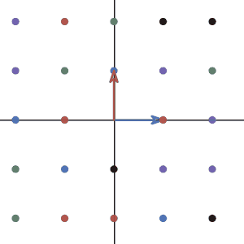

We are finally here! All the idea that we introduced earlier, is for this amazing idea in linear algebra: linear transformation. And this idea will lead us to a powerful tool in linear algebra: the matrix.
Let’s jump right into the definition of linear transformation, and see what is the relationship between linear transformation and matrix multiplication.
The two key words are “Linear” and “Transformation”. We will began with the word transformation. In high school, transformation usually refer as the change from one graph to another graph. In here, the transformation can be understand as a function, a map that take in one vector and returns another one. The reason why we don’t call it function is because we are interested in the “movement”. Just like you can visualize the graph being “compressed” or “stretched”. A linear transformation can be visualized as a vector “moves” to another vector.
Notice that the transformation is not talking about only one vector being transformed into one vector. It is talking about every single vector that lives in the vector space being transformed into another vector. Like when we talk about the word “function”, we are not only interested in one x value change to a y value, we are interested in all x and y value in the domain and range.
But how about the word “linear”? Like what we learned before in “linear” combination, the word “linear” means this type of transformation follows certain rules: additivity and homogeneity.
Additivity means that the transformation preserve addition:
homogeneity, or more precisely, the homogeneity of degree 1 means the operation of scalar multiplication is preserved.
So what is so special about this type of transformation compare to others?
If you have any set of vector that forms a line, for example, all the vectors that has tips sitting on the x-axis. After the transformation, the vectors will still sitting on a line. So linear transformation will not “curve” the space.
Also, notice that these two condition also tells you a important detail, which is the zero vector stay as a zero vector. You can check that using the condition.
Let’s see a simple example:
The transformation we will see is the simplest transformation: the transformation of doing nothing at all:
Is this a linear transformation? Let’s check additivity first:
Obviously, this follows the rule. Now let’s check homogeneity:
lovely! Both rules are satisfied. We can now say that the transformation of doing nothing is a linear transformation.
but that is way too boring, let’s do a interesting one together: the transformation of rotating everything by 90 degrees counter counterclockwise.
To demonstrate the transformation. I will plot the sample vector and many other vectors during the transformation. To not make the graph too crowded, I will only draw the points where the tip of the vectors landed for other vectors.

It seems impossible to show the additivity and homogeneity in this case. Unlike the last time, it is not easy to write down the \(f(\pmb{x})\). However, when you graph the transformation on the basis vectors of 2d space, things gets a lot easier.
Let’s look at how the basis vectors change under the transformation. More importantly, ask yourself whether if the basis is still a basis after the transformation.

As you can see. the basis \((1,0)\) and \((0,1)\) changed to \((0,1)\) and \((-1,0)\). And it looks like the new basis still works well.
so if our vector \(\pmb{x}\) has x component \(a\) and y component \(b\):
in our new basis, the coefficients \(a\) and \(b\) shouldn’t change:
Now we have enough information to show the rotation by 90 degrees is a linear transformation. You will show this in the assignment.
To see this geometrically, if you connect the points to form a grid. You will see that the lines remain as lines after the transformation. The space didn’t “curve”.